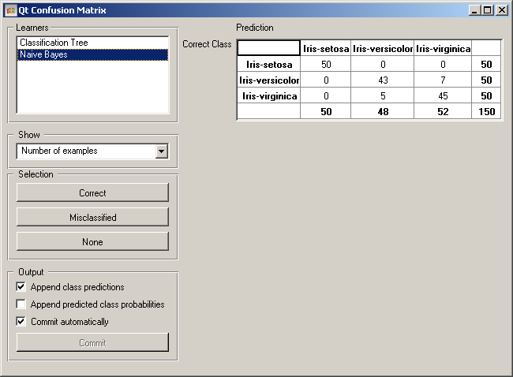
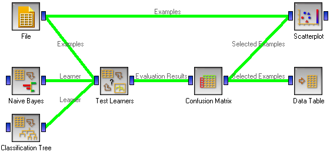
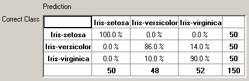
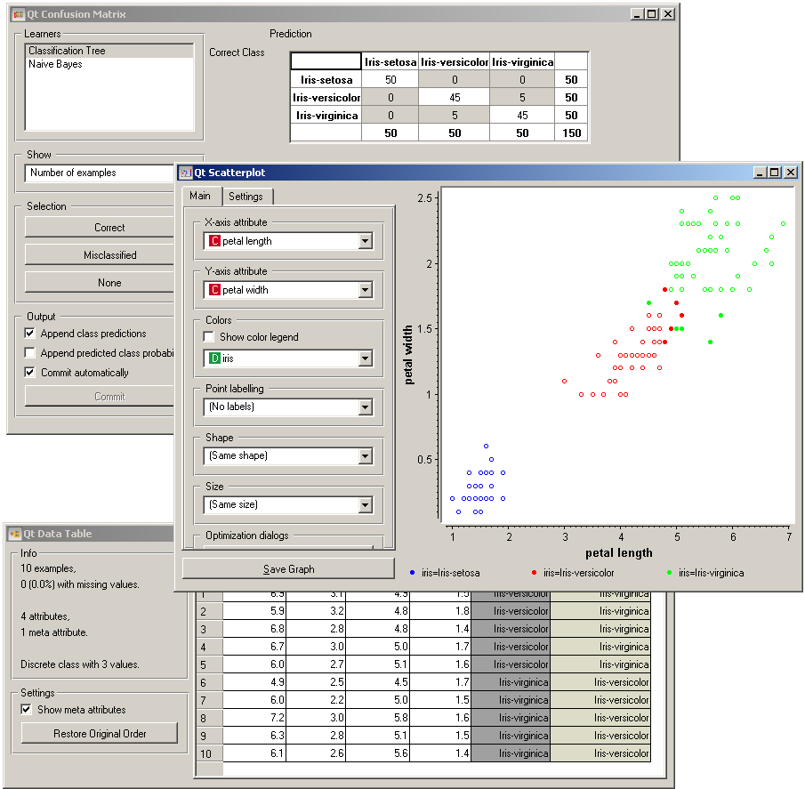

This is documentation for Orange 2.7. For the latest documentation, see Orange 3.
Confusion Matrix¶
Shows a confusion matrix.
Signals¶
- Inputs:
- Evaluation results (orngTest.ExperimentResults)
Results of testing the algorithms; typically from Test Learners
- Outputs:
- Selected Examples (ExampleTable)
A set of examples from the selected cells in the confusion matrix.
Description¶
Confusion Matrix gives the number/proportion of examples from one class classified in to another (or same) class. Besides that, selecting elements of the matrix feeds the corresponding examples onto the output signal. This way, one can observe which specific examples were misclassified in a certai way.
The widget usually gets the evaluation results from Test Learners; an example of the schema is shown below.
The widget on the snapshot shows the confusion matrix for classification tree and naive Bayesian classifier trained and tested on the Iris data. The righthand side of the widget contains the matrix for naive Bayesian classifier (since this classifier is selected on the left). Each row corresponds to a correct class, and columns represent the predicted classes. For instance, seven examples of Iris-versicolor were misclassified as Iris-virginica. The rightmost column gives the number of examples from each class (there are 50 irises of each of the three classes) and the bottom row gives the number of examples classified into each class (e.g., 52 instances were classified into virginica).
When the evaluation results contain data on multiple learning algorithms, we have to choose one in in box Learners.
In Show we select what data we would like to see in the matrix. In the above example, we are observing the Number of examples. The alternatives are Proportions of predicted and Proportions of true classes. In the iris example, “proportions of predicted” shows how many of examples classified as, say, Iris-versicolor are in which true class; in the table we can read the 0% of them are actually setosae, 89.6% of those classified as versicolor are versicolors, and 10.4% are virginicae.
Proportions of predicted shows the opposite relation: of all true versicolors, 86% were classified as versicolors and 14% as virginicae.
Button Correct sends all correctly classified examples to the output by selecting the diagonal of the matrix. Misclassified selects the misclassified examples. None annulates the selection. As mentioned before, one can also select individual cells of the table, to select specific kinds of misclassified examples, e.g. the versicolors classified as virginicae.
When sending the selecting examples the widget can add new attributes telling the predicted classes or their probabilities, if the corresponding options Append class prediction and/or Append predicted class probabilities are checked.
The widget updates the output at every change if Commit automatically is checked. If not, the user will need to press Commit to commit the changes.
Example¶
The following schema demonstrates well what this widget can be used for.
Test Learners gets data from File and two learning algorithms from Naive Bayesian Learner and Classification Tree Learner. It performs cross-validation or some other train-and-test procedures to get class predictions by both algorithms for all (or some, depending on the procedure) examples from the data. The test results are fed into the confusion matrix, where we can observe how many examples were misclassified in which way.
On the output we connected two other widgets. Data Table will show the examples we select in the Confusion matrix. If we, for instance, click Misclassified the table will contain all examples which were misclassified by the selected method.
Scatter Plot gets two set of examples. From the file widget, it gets the complete data and the confusion matrix will send only the selected data, for instance the misclassified examples. The scatter plot will show all the data, with the symbols representing the selected data filled and the other symbols hollow.
For a nice example, we can load the iris data set and observe the position of misclassified examples in the scatter plot with attributes petal length and petal width used for x and y axes. As expected, the misclassified examples lie on the boundary between the two classes.
